ОТРУЙНЕ ДЖЕРЕЛО ПУТІНСЬКОЇ РИТОРИКИ
Ольга Щеглова (Борис Бидяга)
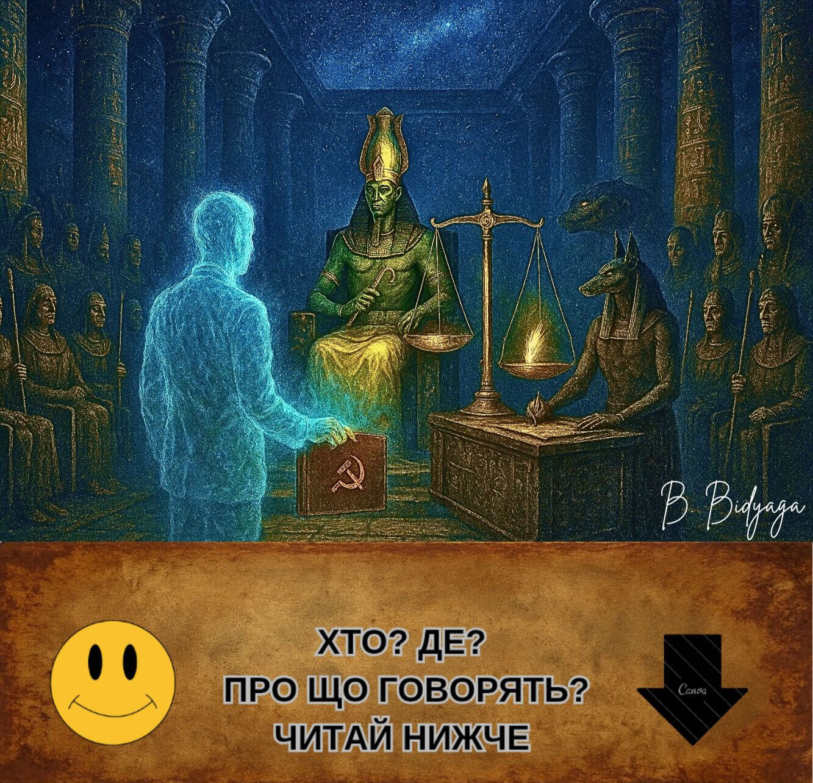
Священний давньоєгипетський храм. Всередині відбувається відома з «Книги Мертвих» процедура Суду єгипетського бога Осірiса. Також у ній беруть участь:
• Бог Тот (секретар суду, з глиняною табличкою в руках)
• Бог Анубіс (експерт-криміналіст)
• Богиня Маат (обвинувач)
• 42 єгипетські боги-присяжні (у масках Гітлера, Муссоліні, Леніна, Сталіна, Берії, Брежнєва, Жириновського, Дракули, Диявола та інших історичних персонажів)
• Президент Росії Володимир Путін (підсудний)
Зала освітлена мерехтливими телеекранами, на яких транслюється судове засідання. Путін стоїть біля гігантських аптекарських терезів; на одній чаші терезів — червоне паперове серце з позолоченим гравіюванням «Путін: 86%». Інша чаша порожня, проте чаші врівноважують одна одну.
Осіріс:
— Починаємо прямий ефір найсправедливішого суду в історії світу! Сьогодні на вагах Істини — доля Великого Хранителя Традиційних Цінностей! Але спочатку — реклама нашого спонсора. Прошу: еліксир молодості «Амбре»!
(Рекламна пауза: богиня Хатхор п'є напій і одразу молодіє на 3000 років. Закадровий голос: «Амбре: ковток, що веде у Вічність».)
Осіріс (звертаючись до Путіна):
— Суду довіряєте? Відводів не буде?
Путін (з ледь помітною посмішкою):
— Та що Ви, Ваша честе! Як можна! Історія російсько-єгипетських відносин... Ми неодноразово надавали допомогу... Прощали кредити... Будували електростанції... Асуанська гребля... Повне взаєморозуміння...
Осіріс:
— Звісно. Ми пам'ятаємо. Суд видаляється до нарадчої кімнати.
(Усі сидять на своїх місцях, як і раніше.)
Маат:
— Я протестую! Ви порушуєте процедуру! Підсудний ще не вимовив 42 клятви перед присяжними: не вбивав, не крадав, не брехав, не підробляв міри ваги... І так далі.
Осіріс (неохоче):
— М-м... Ну гаразд. Підсудний, розкажіть нам свою автобіографію.
Путін:
— Охоче, Ваша честь.
Я народився звичайним пітерським пацаном — середнім троєчником. І сам, своєю впертою працею, збираючи плоди на державній ниві, видерся на вершину влади — став президентом великої країни. Я проводив найгуманнішу і найсправедливішу політику. У своїх указах я обіцяв кожному громадянину окрему квартиру, безкоштовну медицину та освіту, високу зарплату та нульову інфляцію. Я встановив міцний мир у войовничій Чеченській республіці. Я став найщедрішим донором для всього світу. Я збудував 20 нафто- та газопроводів. Мій газ освітлює та обігріває всю планету. Я допомагаю народно-визвольним рухам по всьому світу — постачаю їх зброєю за пільговими цінами. Я роздаю мільярдні кредити бідним країнам і через кілька років анулюю їхні борги. Я віддаю Китаю свої природні ресурси за безцінь. Завдяки моїй політиці блок НАТО істотно розширив свої кордони. Я звільнив братній український народ від тиранії фашистського режиму Зеленського. Я зупинив криваву різанину в Україні.
(На екрані транслюється реклама: «Газ — у кожну гробницю!»)
Путін (секунду дивиться на екран, потім продовжує):
— Я запустив першу людину в космос. Мій придворний композитор написав нетлінний шедевр «Лебедине озеро» [виконує кілька балетних па під музику Чайковського]. Нарешті, я позбавив світ Гітлера та його фашистської диктатури. Я пахав, як раб на галерах, на посаді Президента 50 років! Я відсидів довічний термін! Я підняв свою країну з колін. Я продав фабрики робітникам, а землю — селянам. Я створив першу армію світу.
Я простягнув руку допомоги та захистив від сваволі російськомовних братів за кордоном: у Прибалтиці, Середній Азії та на Кавказі. Ми охороняємо права та свободи російських діаспор на всій території колишнього СРСР.
У країні різко збільшилася тривалість життя: я дожив до 98 років. Медицина розвивається швидкими темпами: я помер не від хвороби, а від нудьги. Патріотизм молодого покоління зашкалює: у кожному шкільному кабінеті висить мій портрет. Традиційні цінності зміцнюються. Шлюби — лише двостатеві. Розлучення, аборти, презервативи — заборонені. Лесбіянки та геї позбавлені громадянства. Противники та критики влади сидять у в'язниці. На землі мир, у людях — повна лояльність. Хіба це не ідилія? Я влаштував у своїй країні вічне свято життя.
Осіріс (широко посміхаючись):
— Достатньо. Ви — квінтесенція доброчесності. Суд видаляється до нарадчої кімнати.
(Усі сидять на своїх місцях.)
Маат (гнівно):
— Постривайте! Ви знову порушуєте... Обвинувач ще не сказав свого слова!
Осіріс:
— Шановна Маат, усьому свій час. Час збирати каміння, час слухати байки. Коли прийде час для ваших фантазій [несподівано зривається на крик], я вам про це скажу! Суд видаляється до нарадчої кімнати!
(Усі сидять на своїх місцях.)
Осіріс (після паузи):
— Пани присяжні, прошу голосувати...
Маат (стрибає, трясучи пір'ям):
— Я протестую! Ще не вислухано сторону обвинувачення! Ще не проводилося зважування серця!
Осіріс (суворо):
— Шановна Маат, серце підсудного було зважено в особливому порядку, воно визнане легшим, ніж ваше перо. Бо воно чисте, як сльоза ненародженої дитини! Анубісе!
Анубіс (дістає з-під ризи заздалегідь підготовлений протокол):
— Ваги показують нуль цілих, нуль десятих грама. Невинуватість повна та абсолютна.
(Чаші терезів раптом починають мимовільно коливатися вгору-вниз. Анубіс хапається за чаші, намагаючись їх урівноважити.)
Осіріс (незворушно):
— Нічого страшного: пертурбації на Сонці. Механізм, знаєте... метеозалежний.
Путін (дивлячись у порожнечу над головами богів):
— Підступи західних партнерів на чолі з НАТО. Вже й до Потойбічного Світу добралися. Знову зазіхають на наші духовні скріпи.
Осіріс (стукає жезлом об підлогу):
— Отже, пани присяжні, голосуємо. Чи підтверджуєте ви повну невинуватість підсудного?
Присяжні (хором):
— Так!
Жириновський:
— Клонувати!
Брежнєв:
— Представити до нагороди!
Диявол:
— Прирахувати до лику святих!
Сталін:
— Ми з тобою однієї крові!
Берія:
— Вклоняюся, Учителю!
Муссоліні:
— Радий знайомству, колего!
Дракула:
— Смоктати вмієш. Наша людина!
Осіріс (ігноруючи протести Маат):
— Суд оголошує вирок: підсудний виправданий.
Маат (трусячи в повітрі товстою пачкою фотографій):
— Та ви при своєму розумі? Ось докази! Вбивства! Викрадення! Отруєння! Війни! Гібридні атаки! Фальсифікації!
(На екрані з'являються докази і майже відразу зникають. Екран покривається дрібною брижами. Через хвилину на екрані виникає зображення Путіна на фоні Храму Христа Спасителя, що тут же змінюється мультиком «Незнайко на Місяці».)
Осіріс (з посмішкою):
— Шановні боги! Голосуємо! Хто за безсмертя, славу та апофеоз підсудного?
(42 боги згуртовано піднімають руки. Транслюється реклама: «Новий саркофаг "Фараон-Люкс"! Три розфарбування: чорний граніт, білий мармур, георгіївська стрічка».)
Путін: (зачитує з глиняної таблички):
— Прийнято одноголосно! Смерть скасовується, дарується вічне життя! Ім'я Володимира Путіна буде вписано до Книги Мертвих золотим чорнилом на титульній сторінці!
Путін (киваючи):
— Дякую. Це наша спільна перемога. Окрема подяка моєму вірному псові, Анубісу. Він хороший хлопчик.
(Анубіс зніяковіло виляє хвостом.)
Маат (у відчаї, роняючи пір'я на підлогу):
— Розумом не осягнути! Неймовірно! Я подаю апеляцію до Марсіанського Міжгалактичного суду!
(Її за руки виводять служителі з головами ведмедів. Трансляція обривається. На екрані — танцюючі козаки.)
Тот (закриваючи справу):
— Усім дякую, всі вільні. Засідання закінчено.
Культурологічний коментар
В основі мініатюри лежить давньоєгипетський міф про Суд Осірiса. Згідно з «Книгою мертвих», душа померлого приводилася до Чертогу Двох Істин, де її чекали:
— Осіріс — бог потойбічного світу, голова суду.
— Маат — богиня істини та справедливості, еталон чистоти.
— Анубіс — бог з головою шакала, що проводив зважування серця.
— Тот — бог мудрості, секретар суду.
— 42 боги-присяжні — кожен відповідав за один із гріхів; померлий повинен був публічно поклястися перед кожним богом, що не вчиняв цього гріха.
Головна процедура — зважування серця: на одну чашу терезiв клали серце померлого, на іншу — перо Маат. Якщо серце було «легшим за перо», душа визнавалася чистою і отримувала вічне життя; якщо важчим — її чекала загибель. Цей ритуал символізував абсолютну справедливість і неможливість обману.
#ПравославнийВоєннийПутінізм
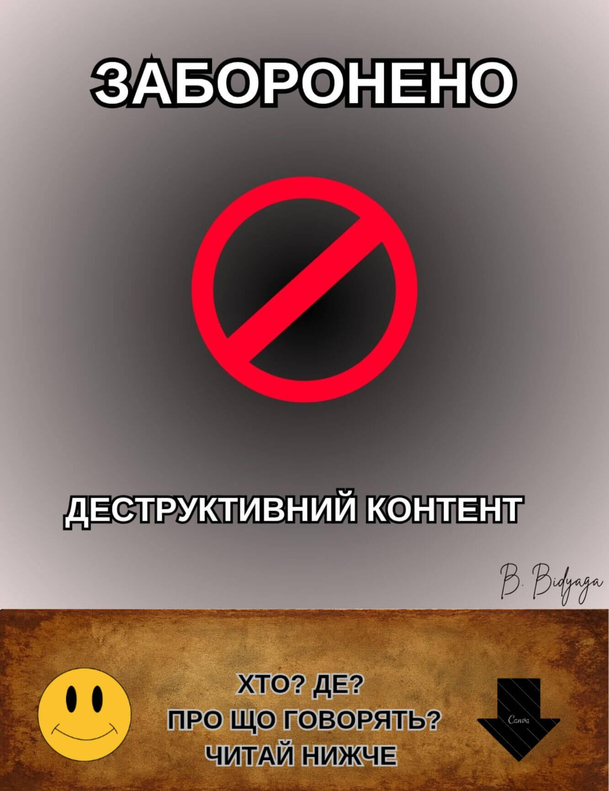
Примітка: iлюстрацію заблоковано цензурою.
Простора конференц-зала. У залі сидять чиновники. Велика освітлена сцена, у центрі якої на спині лежить всесвітньо відомий політик. Його геніталії повністю оголені, а його ерегований пеніс увінчує мініатюрна, але точна копія його голови (тієї, що на плечах). Маленька голівка політика, який лежить на сцені, звертається до тих, хто сидить у залі, з гучною й пафосною промовою:
— Народжуваність у країні падає катастрофічно, як камінь, кинутий у прірву. Я завжди говорив і повторюю знову: у всьому винні презервативи та аборти! І ЛГБТ. І Чайлдфрі. З усією цією єрессю треба боротися, боротися і ще раз боротися. Поки що у нас це виходить погано.
Ми заборонили аборти. І що? Тепер вони їдуть робити аборти до Китаю. Або народжують в Аргентині й залишаються там жити. Презервативи — це всесвітнє зло. Презервативи — це особиста для мене образа. Вони порушують базове право особистості — право плодитися й розмножуватися. Це закріплено в Конституції, між іншим.
Ми заборонили презервативи, визнавши їх «екстремістською символікою». І що ж? Чорний ринок презервативів процвітає. Підпільні мануфактури виробів із гуми зростають як гриби після дощу. Усією країною. ЛГБТ-пропаганда лізе назовні з усіх щілин. Що відбувається? Це повний провал реалізації моїх указів. Я цього не стерплю. Якщо держапарат не може змусити підконтрольне йому населення народжувати — я змушу народжувати держапарат.
Включайте, нарешті, ваші мізки. І починайте працювати. Хіба у нас немає банку сперми? Хіба у нас немає банку яйцеклітин? Купуйте яйцеклітини в населення за твердою ціною. Зрештою, запровадьте натуральний податок — одну яйцеклітину на користь держави щомісяця.
Підключіть Академію наук — нехай зроблять державний військовий iнкубатор. Ми виховаємо справжніх патріотів нашої країни. Щоб з пелюшок зазубрили військовий статут і 10 заповідей путінізму. Ми вбережемо їх від отруйного впливу батьків-лібералів. Це буде оплот нашого майбутнього процвітання й тріумфу.
По-друге. Підключіть генетиків. Країні не потрібні празні домогосподарки та всякі там мислителі. Гени у майбутніх поколінь мають бути правильні: патріотичні, чоловічі, войовничі. Хіба це так складно? Дійте.
Ми відродимо нашу велику державу й нашу велику «другу армію світу». Більш того — ми зробимо її першою! Якою б не була ціна. По трупах ворогів, крізь сльози матерів, по землі, перетвореній на попіл — ми наступатимемо без страху й без жалю. Ми придушимо будь‑який спротив і знищимо всіх, хто посміє виступити проти нас. Навіть якщо для цього доведеться поставити на коліна всю країну — ми це зробимо. Не сумнівайтеся: воля держави залізна, і ніщо й ніхто її не зупинить.
(Бурхливі, тривалі оплески.)
#ПравославнийВоєннийПутінізм
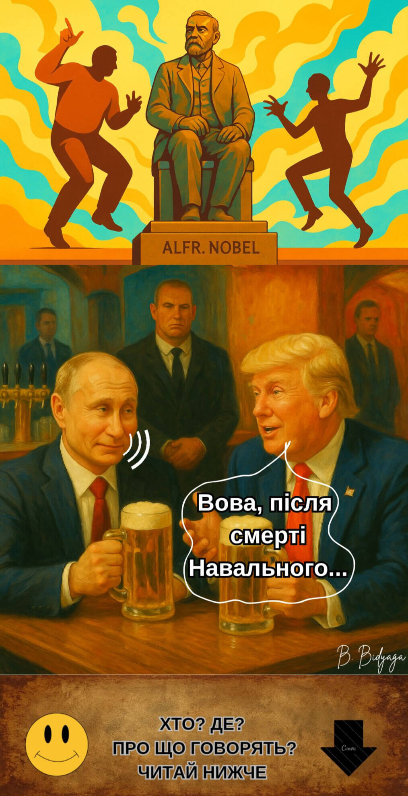
Американський бар. Президент Росії Володимир Путін та Президент США Дональд Трамп сидять за столиком, п’ють пиво і мирно розмовляють...
Трамп:
— Вова, після того як ти розбрався з Навальним, у тебе на політікумі — тиша та гладь. Як на кладовищі. Іділія.
Путін:
— Та годі тобі, Донні. Навальний — політичний банкрот. Пшик. Хлопець, що продавав повітря.
Трамп:
— Тоді навіщо ти розгромив всю його контору? Якщо він — банкрот?
Путін:
— Слухай уважно. В нього не було програми. Лише юрби підлітків, що викрикували образливі кричалки в мій бік. Це програма? Порівняй з Леніним: у того була програма — заводи робітникам, земля селянам. А в цього — лише образи, та ще й непечатні. Це ж просто непристойно.
Трамп:
— Погоджуюсь, безглуздя. Звичайний вискочка.
Путін:
— Саме так. За весь мій час лише одна людина справді мене непокоїла — Борис Немцов. Справжній політик. Він розумів, що робить.
Трамп:
— І ти його прибрав, щоб не ліз на вибори?
Путін (знизуючи плечима):
— Ні. Ми б його і так не допустили — виборча комісія знайшла б причину. І, між іншим, я не віддавав такого наказу.
Трамп:
— Та годі тобі, Вова. Усі знають, що це справа твоїх спецслужб.
Путін:
— Гучні вбивства ми вже давно не практикуємо. Це минуле століття. Навіщо кров та скандали, коли можна будь-кого… прибрати тихо. Акуратно. Будь-кого, хоч би й президента США.
Трамп (метушливо):
— Гей, полегше, Вова, це не моя війна! Це все Байден. А я тобі друг, ти ж знаєш.
Путін (зі зневажливою усмішкою):
— Так, так. Знаю. Бачу, як ти звиваєшся в'юном, граючи на два фронти.
Трамп (виправдовуючись):
— Вова, я клянуся, я нічого не маю проти тебе особисто. Я, чорт забирай, навіть розумію твої мотиви. Я просто… хочу Нобелівку!
Путін (задумливо):
— Цілком природнє бажання. Я от теж думаю… чому б і мені не отримати Нобелівку? Наступного року, наприклад.
Трамп (витріщивши очі):
— Ти?!
Путін (зверхньо):
— Донні, у кожного є ціна. У когось нижча, у когось вища. А якщо ні… є інші методи. Погрози, компромат, шантаж… Механізм відточений.
(Пауза.)
Путін (з холодною, іронічною посмішкою):
— Знаєш, Нобелівка на моїх грудях виглядатиме навіть переконливіше, ніж на твоїх. Уяви, сенсація: «Воєнний злочинець Путін — Нобелівський лауреат». Це найкращий доказ моєї безмежної влади над світом. Це навіть крутіше, ніж моя армія на підступах до Парижу! Ось так поставити раком цю трусливу Європу і від'їбати по повній програмі!
Трамп (обережно):
— Вова, а давай так… спочатку я отримую Нобелівку, а потім вже ти ставитимеш цю трусливу Європу на коліна. Угода?
Путін (махає рукою):
— Добре, хай буде по-твому. Ти перший, Донні. До того ж, мені ще потрібно дiйти до Києва, перш ніж збирати нагороди…
#ПравославнийВоєннийПутінізм
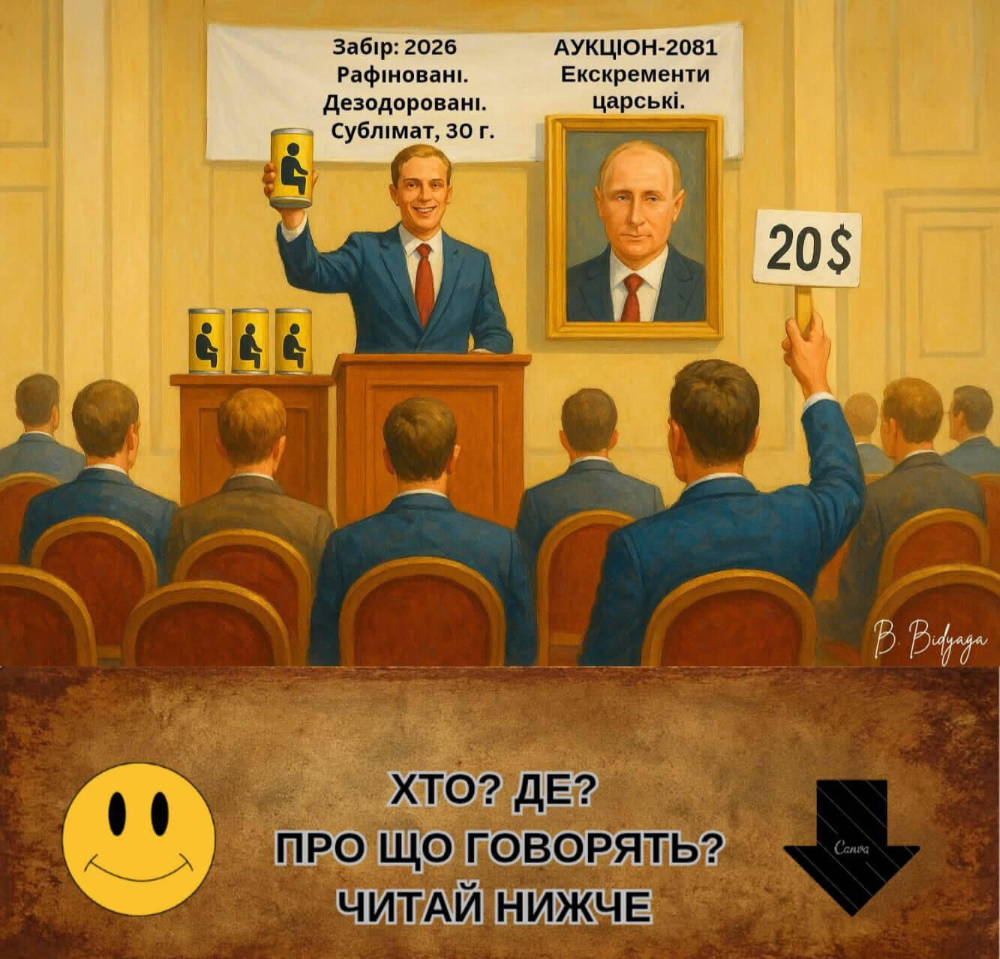
Росія. Москва. Кремль. В кабінетi за столом сидять: президент Росії Володимир Путін та Михайло Ковальчук, старий друг Путіна, який тепер курирує дослідження у сфері подовження життя та уповільнення старіння.
Путін (майже ласкаво):
— Ну, професоре, звітуй: як просуваються справи з моїм безсмертям?
Ковальчук (із ентузіазмом):
— Є зрушення, значні. Зараз опрацьовуємо проект із консервацією твоїх... біоматеріалів.
Путін (здивовано):
— Що? До чого тут какашки?
Ковальчук (поспішно):
— Постривай. Не метушись. Вислухай спочатку.
Путін (милостиво):
— Говори.
Ковальчук:
— Наука довела, що при сублімації в екскрементах зберігається повноцінна ДНК. Ми сублімуємо та консервуємо твої какашки і комплектуємо їх стопкою фотографій і збіркою твоїх промов. У далекому майбутньому за твоєю ДНК та з опорою на твої фото і зразки твоїх виступів буде відтворена точна копія Володимира Путіна. Імовірно, надрукована на 3D-принтері. Ну? Що скажеш?
Путін (задумливо):
— Лайняне безсмертя. Гівняна ідея. Ну, надрукував ти мене. А хто я такий? Ніхто. На престолі ж сидить інша людина. Відразу згадають мені і війну, і підпали, і вибухи, і кабелі, і все інше.
Ковальчук:
— Щодо цього не знаю. Який до того моменту в Росії буде політичний лад, передбачити неможливо.
Путін (із натиском):
— У тому й річ. Мені потрібне інше безсмертя. Я хочу, щоб ось це, моє, теперішнє тіло служило мені вічно. Невже так складно це зробити?! Зносилося серце — трансплантація. Печінка, нирки — трансплантація... Це ж елементарно!
Ковальчук (обережно):
— Але у кожного органа є термін служби — не більше вісімдесяти років...
Путін:
— А ти візьми серце у школяра — вчорашнього випускника. Ти що — жалієш для мене якогось пацана?
Ковальчук (завзято):
— Та що ти! Я тобі своє серце готовий віддати...
Путін (з огидою):
— Твого не треба. На біса мені твій іржавий мотлох? Ти дай мені серце молоде, з ресурсом. А через 60 років поставиш нове. Що тут складного?
Ковальчук:
— На сьогоднішній день медицина не дає гарантії, що орган приживеться. Ймовірність ускладнень досить висока. Тож або чекай ще років 20, або консервуємо какашки.
Путін (буркотливо):
— Гаразд, так вже й бути. Давай свої какашки. Але тільки як запасний варіант. У крайньому разі після моєї... смерті [кривиться, ніби від болю] можна буде продати з аукціону.
Ковальчук (з посмішкою):
— Так. На Заході цінують лайно сильних світу цього. Один італійський художник, здається, його звали Мандзоні, продавав своє лайно за ціною золота. А зараз така 30-грамова баночка коштує сотні тисяч євро.
Путін (зневажливо):
— Ну якщо якийсь паршивий італьяшка випорожнювався золотими злитками — моє лайно піде з молотка за десять мільйонів!
Ковальчук (підлесливо):
— А то й більше!
Путін:
— Тільки чур! Не жадійничай! 30 грамів?! Та це куркам на сміх! Я що, голуб, чи що?
Ковальчук (переконано):
— Ти? Ні. Ти сокіл. Орел. Шуліка. Птеродактиль.
Путін (гордовито):
— Ось саме так. І моє лайно має бути вищої якості. Рафіноване. Дезодороване. І нехай буде блакитного кольору. Блакитна кров — блакитне лайно.
Ковальчук:
— Звісно, звісно. Першого віджиму. Virgin Putin shit. Чи Putin virgin shit? Як правильно?
Путін (з ненавистю):
— Вільний!
#ПравославнийВоєннийПутінізм
Росія. Москва. Зала засідань Держдуми РФ.
Президент Росії Володимир Путін виступає перед депутатами.
Путін:
— Шановні депутати! Друзі! Соратники!
Геополітична обстановка загострилася до межі. Вороги Росії не сидять склавши руки. Захід докладає всіх зусиль, щоб нас знищити. Особливо Європа. Особливо Франція.
Франція споконвіків була й залишається нашим головним ворогом. Франція завжди зазіхала на наші традиційні цінності, прагнучи знищити нашу культурну спадщину, нашу мову. Згадаймо дев’ятнадцяте століття, коли в результаті французької операції впливу вся російська еліта протягом десятиліть говорила виключно французькою. Російська мова опинилася на межі повного забуття і вимирання. І якби не глибинний російський народ, який цілком справедливо ненавидів усе французьке, ми б із вами зараз розмовляли французькою!
Так, у дев’ятнадцятому столітті французькі спецслужби зазнали фіаско, зате тепер вирішили взяти реванш.
Наші вороги звинувачують нас у тому, що нібито ми ведемо проти Заходу гібридну війну. Нахабна брехня! Ми мирні люди. А от французи справді знову й знову атакують нашу культуру, наші традиційні цінності, нашу мову.
Вони заслали в російську мову масований ворожий десант. Тільки подивіться, скільки в нас французьких слів, які так майстерно маскуються, що люди навіть не підозрюють, що їхня мова просто нашпигована французькими словами-шпигунами.
Шофер, табло, театр, шедевр … Та їх тисячі. Уже незрозуміло: це ще російська мова чи вже діалект французької?
Але «шофер» — це ще дрібниця. Але ж вони впроваджують у нашу мову такі деструктивні слова, як "президент" і "революція"! Це неприхована диверсія та атака на наші традиційні цінності. Що це ще за президент? У Росії ніколи не було й не буде «президентів». Тільки цар [б’є себе кулаком у груди]. Або: «революція». Революції та гільйотини для королівських осіб — це чисто французьке суспільно-політичне явище, абсолютно чуже російському духові. І, між іншим, у Росії цих мерзот ніколи не було — доти, доки в нашій мові не з’явилися ці ганебні слова-диверсанти.
І це зрозуміло, товариші. Згадаймо Біблію: «Спочатку було Слово». А вже потім усе інше. Тобто немає й не може бути революції, доки в мові відсутнє слово, що її позначає. Ось приклад. У Радянському Союзі не було сексу, це загальновідомий факт. А чому? А тому що не було слова «секс». Але щойно опортуніст Михайло Горбачов відкрив кордони для західної масової культури, до нас прийшли слово «секс» і слова «гей», «лесбіянка», «ЛГБТ» — і після цього розпуста та содомія розквітли в Росії пишним цвітом.
Звідси висновок, товариші: якщо ми хочемо викорінити чуже нашій культурі явище — ми маємо стерти з мови саме слово, що позначає це явище. Законодавчо заборонити, переписати словники, спалити всі книги, де це слово присутнє. Всіх порушників — переслідувати за законом.
А наші так звані «лінгвісти», які сором’язливо називають ці слова-шпигуни «запозиченнями»? Це шкідництво, товариші, і ми зобов’язані його припинити. Спочатку ці словечка-диверсанти асимілюються, потім починають плодитися й розмножуватися і зрештою витісняють із мови первісно російські слова. Це мовна агресія, товариші. Лінгвістичний геноцид. Оправдання французьких запозичень у російській мові має бути прирівняне до виправдання тероризму. Юридично. Від п’яти років до довічного ув’язнення, залежно від значення конкретного слова.
За нейтральні слова (шофер, реванш, шедевр, театр) — п’ять років.
За «революцію» (посягання на основи конституційного ладу) — десять років.
За «президента» (дискредитація національного лідера) — п’ятнадцять років.
Але найпідступніше французьке слово-диверсант — це «презерватив». Ми на власні очі спостерігали, як слідом за мовною експансією наш ринок буквально заполонили й самі ці диявольські гумові вироби. Французькі, між іншим. Ця безпрецедентна атака спрямована на найцінніше, що в нас є, — на наш генофонд. Це демографічна атомна бомба, товариші. Знищити росіян ще до їх появи на світ. Це найсвятотатськіша, найвитонченіша зброя масового ураження.
Слово «презерватив» має бути стерте з російської мови. Ми повинні вирвати його з корінням із нашого життя. Вживання цього слова в будь-якій формі — акт державної зради. У її найвищому прояві. Зображення презерватива має бути прирівняне до демонстрації екстремістської символіки.
І на майбутнє. Товариші! Ми повинні суворо охороняти нашу мову від проникнення західних слів-диверсантів. Це головна лінія оборони в нашій боротьбі за збереження традиційних цінностей.
Дякую за увагу!
#ПравославнийВоєннийПутінізм
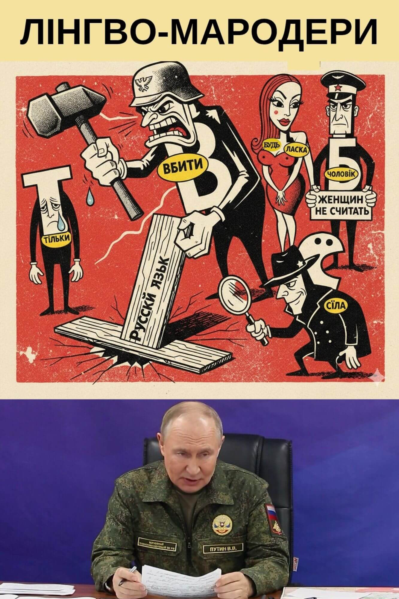
Росія, Москва, Кремль. Засідання Ради Безпеки РФ. Виступає президент Росії Володимир Путін.
Путін:
— Товариші! Сьогодні у нас знаменний день. Сьогодні ми знайшли і сформулювали нашу третю — і головну — мету спеціальної військової операції. Отже, відтепер прошу запам'ятати нашу стратегічну цільову тріаду в боротьбі з фашистським українським режимом:
• Демілітаризація
• Денацифікація
• Деколонізація (російської мови)
Товариші! З великим сумом повідомляю: нас спіткала катастрофа космічного масштабу. Ворог підступно, таємно, за нашою спиною, протягом багатьох століть плів смертельно небезпечне павутиння, в якому ми й опинилися, абсолютно несподівано для самих себе.
Товариші! Ми приділяємо найпильнішу увагу захисту наших духовних і сімейних цінностей. Це чудово! Проте ми зовсім випустили з уваги наші традиційні комунікаційні цінності. Смислові (семантичні) та звукові (фонетичні).
Адже наша мова, наше національне надбання, протягом століть піддається грабіжницьким піратським нальотам з боку української мови! Вони крадуть наші традиційні, споконвічно російські слова, спотворюють їх, змінюючи фонетичний вигляд і семантику, і використовують у своїй мові без нашої згоди!
Вони вкрали у нас префікси і закінчення, вони вкрали у нас іменники, прикметники і дієслова. Вони кардинально змінюють їхній зміст, вони перекручують їхню вимову. Це порушення авторських прав на нашу інтелектуальну власність! Ми не давали їм на це дозволу. Це кримінальна стаття і підстава для вимоги компенсації.
Але це ще й профанація російської мови. Це геноцид нашого Лінгвофонду. Це жирний плювок нам у душу.
Товариші! Переді мною лежить тритомник, складений нашим головним лінгвістом і визнаним фахівцем з російської мови — Володимиром Далем. Тут зібрані всі споконвічно російські слова, вкрадені українською мовою з нашої мови, слова, піддані приниженню і нарузі та перетворені на презирливих рабів на службі комунікацій української фашистської тусовки.
Я не хочу бути голослівним, товариші. Я наведу вам десятки прикладів того, як наші благородні автентичні російські слова були грубо і безцеремонно зґвалтовані та втиснуті в чужі рамки так званої української мови.
• Ось російське слово убить. Вони його хапнули і перетворили на вбити. Це дискредитація: вбивають цвях у дошку, а ми убиваємо фашистів.
• Ось російське слово только. Вони його перетворили на тільки. Для російського вуха звучить образливо. До того ж, зауважте, вони тут використовують ворожу нам натівську літеру і. З крапкою! Абсолютно чужу нашим інтелектуальним цінностям. А ви знали, що в мові є ще більш мерзенна літера — ї з двома крапками! Це відвертий символ деградації та квінтесенція фашистської риторики.
• Ось російське слово человек. Вони з нього зробили чоловік, та ще й змінили семантику. За їхньою збоченою логікою, до категорії людей належать тільки чоловіки. Жінки, значить, це не люди. Це дискредитація всієї нашої жіночої половини. Вершина неповаги до російської жінки!
• Ось російське слово нарушать. Вони в ньому змінили все: префікс, суфікс, закінчення. Що вийшло? Огидний гібрид: порушувати. Це образа почуттів віруючих у красу і велич російської мови.
• Ось російське слово ласка. Добре, миле, невинне і тепле. Вони поставили його на службу безсоромній пропаганді сексуальних ігрищ і розпущеності! Ви тільки подивіться! Будь ласка! У них це нібито означає пожалуйста.
«Будь ласка, сходи в магазин». «Будь ласка, зроби омлет». І так далі. На кожному кроці ми чуємо це будь ласка. Але ж це — не що інше, як запрошення до сексуальної прелюдії:
Будь ласка = Приласкай мене!
Це ж сексуальне домагання у чистому вигляді!
• Ось російське слово сурово. Вони його хапнули, але значення міняти не стали. А щоб замести сліди злочину, «перефарбували» зовнішню оболонку. Як? Розбили слово на три рівні частини і дві останні поміняли місцями. Що вийшло? Огидний гібрид: суворо. Серце кров’ю обливається, коли дивишся на цього виродка.
• Ось російське слово даже. Частка, маленька й беззахисна. Але дуже важлива. Саме такі частки надають нашій мові багатства емоційних відтінків. Її вкрали і переставили дві перші літери. Що вийшло? Якийсь жахливий мутант: адже. І ще й значення змінили. У них ця лексична одиниця означає «адже». Шок і трепет!
Як прикажете це розуміти? Це дискредитація самих наших смислів, товариші. Священних смислів.
Чого вони тільки не роблять з нашими словами!
• Переставляють букви в історично сформованих поєднаннях: ми говоримо рождается, вони кажуть народжується. У нас жд, у них дж. Це просто насмішка над нашою мовою.
• Ми говоримо капли, вони кажуть краплі.
• Ми говоримо улица, вони кажуть вулиця.
• Ми говоримо комедия, вони кажуть кумедія.
Вони нас просто дражнять! Як мавпа в зоопарку.
• А старе добре слово какой-нибудь? Вони ж його просто знівечили! Кастрували і поміняли місцями частини складного слова. Що вийшло? Нісенітниця, абракадабра: будь-який.
Повторюю, у мене в руках три товсті томи з переліком усіх злочинів подібного роду.
| Російське автентичне слово | Український гібрид |
|---|---|
| волосы | волосся |
| трижды | тричі |
| креститься | хреститися |
| кошка | кішка |
| месяц | місяць |
| лицо | обличчя |
| сын | син |
| жестоко | жорстоко |
| путеводитель | путівник |
| обвинитель | обвинувач |
І так далі і тому подібне.
Ми звернулися до фахівців, які дійшли висновку, що дане явище є не чим іншим, як колонізацією російської мови з метою її дискредитації, приниження, пародіювання, обдурювання, наруги, заподіяння тяжкої шкоди її структурним елементам і, зрештою, — її знищення.
Тому, товариші, перед нами постає нове завдання. За чотири роки самовідданої боротьби ми домоглися демілітаризації та денацифікації так званої України. Тепер перед нами стоїть завдання не менш важливе — деколонізація російської мови.
Ми повинні вирвати з лап фашистів наші зганьблені слова, повернути їх у рідну гавань і реабілітувати.
І ми подаємо до міжнародного Трибуналу зустрічний позов до України про відшкодування репутаційної та лінгвістичної шкоди. Якщо хтось хоче використовувати наші слова — отримайте письмовий дозвіл і платіть роялті. Але ми не допустимо жодного насильства, наруги і неповаги до наших мовних символів та їхніх священних смислів.
Микола Патрушев, помічник президента Росії:
— Володимире Володимировичу! Пропоную: виступити з ініціативою взаємозаліку за даним позовом та позовом України до Росії про відшкодування матеріальних збитків від військових дій. Суму пропишемо таку саму — 800 мільярдів євро.
Путін:
— Пропозиція правильна. Дякую!
Це наша подвійна перемога. Ми зрівняли з землею добру половину їхньої країни, і при цьому не заплатимо ні копійки репарацій.
#ПравославнийВоєннийПутінізм
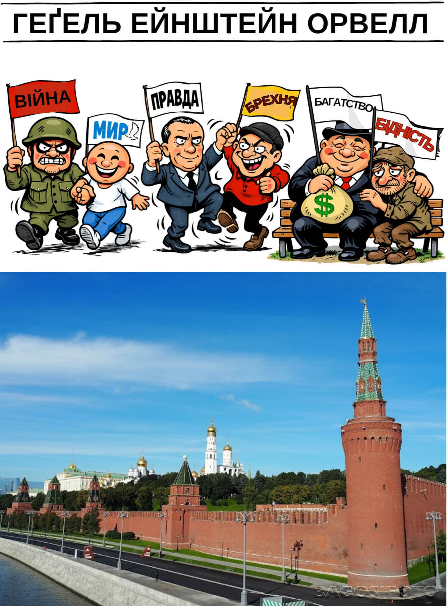
Росія, Москва, Кремль. Російський президент Володимир Путін виступає перед журналістами кремлівського пулу.
Путін:
— Товариші! Сьогодні я хотів би торкнутися засадничих принципів російської державної ідеології. Вороги звинувачують нас у тому, що ми, мовляв, перекручуємо ідеї та факти, ставимо з ніг на голову поняття, принципи та віру. Часто в публічному полі стосовно нас вживають слова «брехлива пропаганда».
Це несправедливо, товариші. Це нахабна брехня та інсинуація. Ми нічого не вигадуємо і не потерпимо жодної відсеб’ятини. Наша ідеологія базується на суворо науковому підході. Як і марксизм-ленінізм, наша ідеологія логічно випливає зі всесвітньо відомих теорій найвеличніших мислителів людської цивілізації. Якщо трьома стовпами комуністичного вчення були Маркс, Енгельс і Ленін, то три кити нашої ідеології — це Гегель, Ейнштейн та Орвелл.
Діалектика та Теорія відносності — це наукова основа для структурних рамок нашої ідеології. Роман «1984» — це яскравий зразок змістовного використання цієї структури.
Наш світ стоїть на фундаментальних законах:
• Всесвітнього тяжіння
• Єдності та боротьби протилежностей (Гегель)
• Загальної теорії відносності (Ейнштейн)
Так-с, дорогі товариші, все в цьому світі відносне: хороше і погане переплітаються, антагоністи живуть у симбіозі. Читайте Гегеля. Згадуйте Ейнштейна.
Ось, скажімо, війна і мир. Геніальний провидець Орвелл першим відкрив незаперечну істину:
МИР — ЦЕ ВІЙНА, ВІЙНА — ЦЕ МИР
І справді. Дивіться: між НАТО і Росією зараз мир. Поки що. Я повторюю: поки що. Але що відбувається на ділі? Насправді триває повномасштабна гібридна війна (кібератаки, війна ідей і сенсів, драконівські економічні санкції, заморожування наших фінансових активів тощо). І це ви називаєте «миром»? Окремо хочу відзначити відверто ворожу практику регулярних постачань натівської зброї Україні. Якщо натівські «Хаймарси», нехай і запущені з України, рознесли мені десятки стратегічно важливих НПЗ — це, по-вашому, називається миром?
З іншого боку, конвенційні війни — це мир у зародку. Війна веде народи до миру. Дайте людям війну — і вони відразу стануть запеклими прихильниками миру. Війна породжує мир. Ніхто не бажає миру більше, ніж солдати, які сидять в окопах. Ці солдати б'ються не за території — вони б'ються за мир. І чим жорстокішою, кровопролитнішою, руйнівнішою стає війна, тим міцнішим і непорушнішим буде мир, породжений цією війною.
ВІЙНА — ЦЕ МИР, товариші. Це факт. І з цим доводиться рахуватися.
Ще одне геніальне відкриття Орвелла — аксіома:
ПРАВДА — ЦЕ БРЕХНЯ
І справді, констатація будь-якого факту є суб'єктивною. Все залежить від точки зору мовця, від інтерпретації, зрештою — від визначення понять. Але ж у різних культурах понятійний апарат може (і повинен!) відрізнятися. Наприклад, у Європи свої поняття про обов'язок, мораль, духовні цінності, у нас — свої. Вже в силу цього ми не можемо мати з ними однакову інтерпретацію фактів. Те, що вони називають правдою, для нас — брехня. І навпаки. Це ж очевидно.
Щодо так званого «переписування» історії. Але це ж очевидно, товариші. Науково-технічний прогрес кардинально змінює наше життя, наше сприйняття, наші погляди, змінює буквально на очах. Зараз у нашому розпорядженні в десятки разів більше інформації, ніж було, скажімо, десять років тому. Штучний інтелект надає величезні можливості для більш адекватного аналізу та розуміння історії. В силу цього нам, звичайно ж, доводиться адаптувати навчальні посібники для студентів та школярів. Це очевидний наслідок тотальної інформатизації суспільства, в якому ми живемо.
Далі. Діалектичний підхід підводить нас до визнання очевидної істини:
ЗАХИСТ — ЦЕ НАПАД
Ну ось взяти хоча б нашу героїчну спеціальну військову операцію. Так, зараз це вже повноцінна війна. Війна за мир у всьому світі. Але згадаймо, як усе починалося. НАТО відверто готувало вторгнення української армії в нашу країну. Якби 24 лютого 2022 року ми не вдерлися на територію України, то зараз ми з вами захищалися б від ворога на нашій власній землі. Ми вчинили мудро — завдали ворогу превентивно-відповідного удару. Тим самим врятували від загибелі та руйнування тисячі життів і сотні цивільних об'єктів. Як бачите:
НАПАД — ЦЕ ЗАХИСТ
У чистому вигляді.
Отже, товариші, підіб’ємо підсумки. Найважливіший фронт нашого протистояння із Заходом — ідеологічний. У своїй професійній діяльності ви повинні не тільки дезавуювати ворожу пропаганду — ви повинні вміти доводити електорату наукову обґрунтованість нашої державної ідеології. Я навів вам кілька переконливих прикладів. Це основа, яку ви можете розвивати та поглиблювати нескінченно.
Дійте, товариші!
Перемога буде за нами!
#ПравославнийВоєннийПутінізм
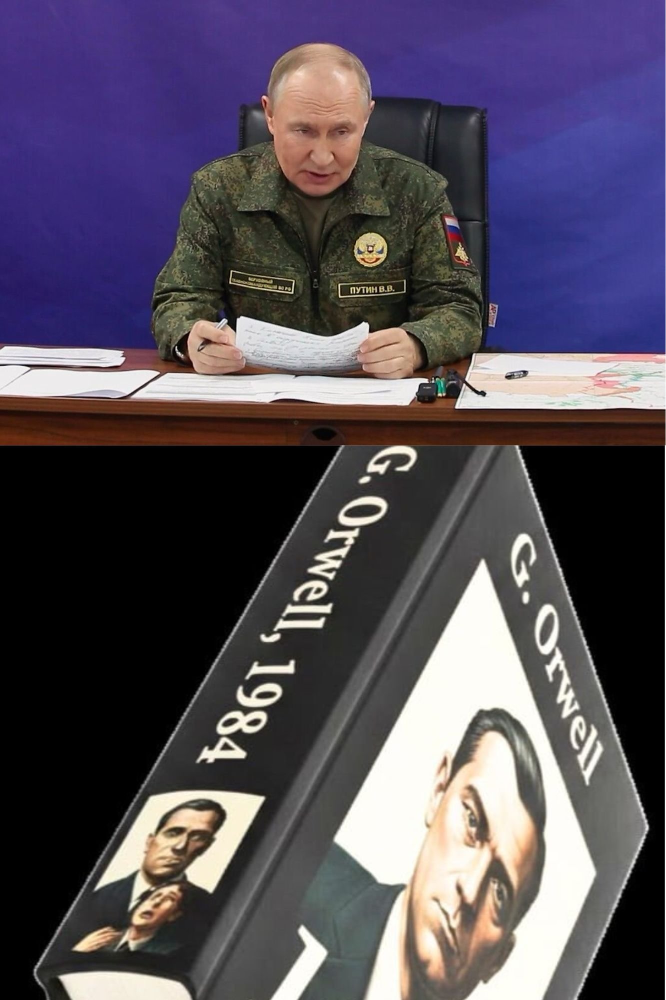
Росія, Москва, Кремль. Засідання керівників органів державної безпеки та охорони правопорядку. Виступає президент Росії Володимир Путін.
Путін:
— Товариші!
Хто з вас читав капітальну працю великого британського письменника Джорджа Орвелла «1984» ? Ніхто не читав? Прочитайте. Це наша настільна книга.
Дорогий товариш Орвелл описав досить ефективну тоталітарну систему державного управління. Звісно, у середині минулого століття йому й уві сні не могли наснитися технології, які є у нас із вами. Через це його система досить громіздка, ресурсозатратна та дорога. Але все одно — вона чудово працює! Навіть в умовах технологічної відсталості.
Та головне, товариші, — це його безсмертні тоталітарні ідеї: дводумство, переписування історії, поліція думок.
Дещо ми в нього вже перейняли і застосовуємо з великим успіхом. Але, як то кажуть, ще є до чого прагнути.
Насамперед ми маємо ввести у нашу юриспруденцію поняття думкозлочин. Це поняття логічно випливає з наших традиційних цінностей. Згадайте, що говорив Христос у своїх проповідях. Якщо ти забажав дружини брата твого, ти вже вчинив перелюб. Таким чином, згідно з догматами нашої православної християнської церкви, сама думка про гріх стає гріхом. Це важливий метафізичний стрибок, який ми просто зобов'язані поставити на службу безпеці нашої держави.
Тож думкозлочин придумали не ми і навіть не Орвелл — його вигадав сам Господь Бог.
Що для нас це означає на практиці?
Перше: у поліції має з'явитися спеціальний підрозділ — Відділ боротьби за чистоту думок. Простіше кажучи, та сама орвеллівська Поліція думок.
Друге — необхідно доопрацювати наші кримінальний та адміністративний кодекси, ввівши покарання за думкозлочин.
І найголовніше — ми маємо налагодити практичну роботу серед населення.
Звернемося до нашої настільної книги. У міфічній країні Океанія інакомислячих виявляли, встановивши за громадянами цілодобове стеження за допомогою так званих телекранів. На відміну від Океанії, яка, як я зрозумів, на міжнародній арені мала статус маргінала, Росія є одним із найбільших геополітичних гравців і повинна дотримуватися хоча б якоїсь подоби елементарних пристойностей. Тому ми не можемо відкрито порушувати такі базові права громадян, як таємниця приватного життя.
А крім того, телекрани хороші як інструмент залякування, але для виявлення таємних думок потрібні таємні методи. Ніхто не стане зізнаватися в єресі, знаючи, що його підслуховують і що за ним підглядають.
Ми вже зробили в цьому напрямку великий — величезний — крок: розробили та впровадили безальтернативний месенджер МАХ, що дозволяє негласно відстежувати комунікації наших громадян.
Але! Коли іноагент виходить на мітинги, стає в одиночний пікет або публікує в інтернеті непатріотичні заклики — це вже запущена стадія ідеологічної девіації. Це вже не лікується, а лише карається тюремним ув'язненням.
Взагалі, ви знаєте, я пропоную розглядати інакомислення як прогресуюче захворювання. Якщо нам вдасться діагностувати його на ранній стадії, є дуже хороший шанс за допомогою елементарних коригуючих процедур назавжди вилікувати людину від цієї хвороби.
Тому — наша увага має бути спрямована насамперед на дітей. Так, у нас уже повсюдно проводяться уроки «Розмови про важливе». Це прекрасно — ми навіюємо нашим дітям правильні установки. Але ж потрібен і зворотний зв'язок! Що ми маємо в цьому плані? Анкетування студентів? Воно абсолютно неефективне, це все одно що чекати від іноагента зізнань перед телекраном.
Нам потрібне системне, глобальне рішення. І воно лежить на поверхні.
Що ми з вами робимо? Ми встановлюємо в дитячих садках, школах, інших навчальних закладах цілодобове прослуховування. Не відеоспостереження — ні. Це дорого і не потрібно. Нам не потрібні обличчя — тільки розмови і система розпізнавання голосів. Це простіше і дешевше. І робиться приховано.
Далі штучний інтелект аналізує інформацію, що надходить на сервер, і видає кінцевий результат:
«Петя Бєлкін із 3-го класу школи номер 212 неблагонадійний; вчора на перерві між другим і третім уроком він сказав образливе слово на адресу Президента».
Далі Петею займається відділ у справах неповнолітніх: безболісна ідеологічна корекція, як, знаєте, за допомогою брекетів у дитини коригують положення зубів, що ростуть убік. І точно так само, як це буває з кривими зубами — у дитячому віці така ідеологічна корекція ще можлива.
І між іншим, хлопчик Петя, коли виросте, буде нам тільки вдячний за те, що допомогли йому в дитинстві позбутися неправильних думок і тим самим врятували від в'язниці.
Зрозуміло, тотальне прослуховування має здійснюватися у всіх державних установах — тут ми не порушуємо жодних законів. За погодженням із власниками приватних бізнесів встановлюємо прослуховування також і в їхніх закладах та офісах. Відмовляться йти назустріч — ви знаєте, як їх переконати.
Наша кінцева мета, товариші, — побудувати гармонійне суспільство — суспільство, засноване на принципах гомогенності, конформізму, солідарності та згуртованості.
Щоб мені не доводилося під час «Прямої лінії» з народом брехати, стверджуючи, що в Росії іноагенти не піддаються кримінальному переслідуванню.
Ми насправді не будемо переслідувати інакомислячих — з тієї простої причини, що у нас не буде інакомислячих.
#ПравославнийВоєннийПутінізм
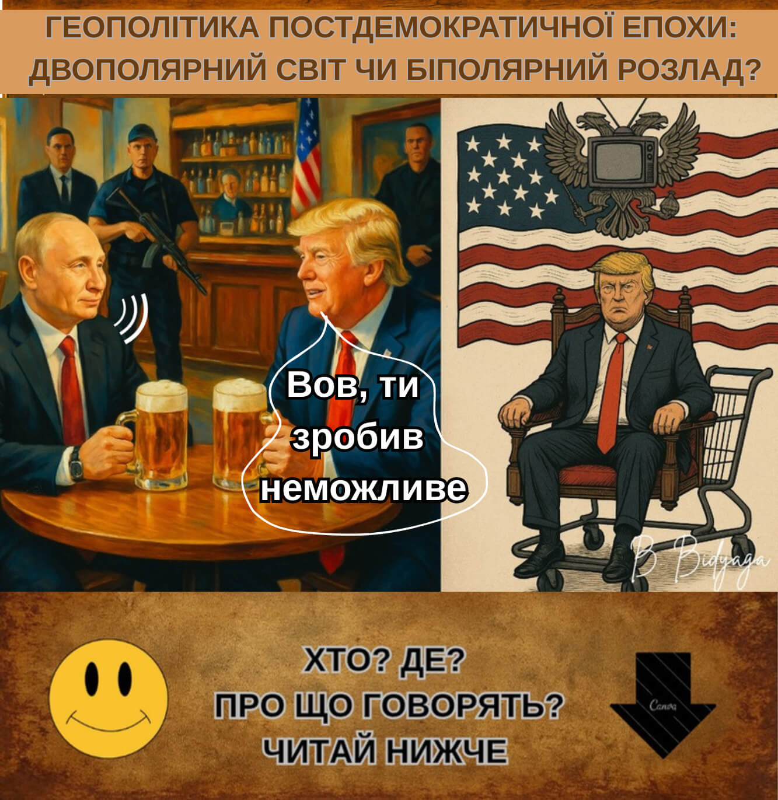
Американський бар. Президент Росії Володимир Путін та Президент США Дональд Трамп сидять за столиком, п’ють пиво і мирно розмовляють.
Трамп:
— Вов, ти зробив неможливе: 25 років при владі! Як тобі це вдалося?
Путін:
— Та дуже просто: переписав Конституцію.
Трамп:
— І тебе не зкинули?
Путін:
— Ми це заздалегідь передбачили. Зварганили "смертельний вірус", влаштували пандемію... Нагнали на населення такого страху — задушили протест у зародку. Про всяк випадок я тримав у рукаві навіть «воєнний стан». Не знадобився. Опозиція? Паперовий тигр. Самі гучніше за всіх кричали, щоб я посилив карантинні заходи. Жалкі, нікчемні люди. Усі сиділи по домівках і тільки й робили, що тремтіли за своє здоров’я. Одним словом — моєму електорату було не до Конституції.
Трамп:
— Приголомшливо! Неймовірно! Я теж не проти… Але у нас, розумієш, демократія!
Путін:
— Та я б і в Америці всю вашу демократію під себе прогнув!
Трамп:
— Ти це серйозно?
Путін:
— Абсолютно. Слухай уважно, Донні. Почни із системи стримувань і противаг. Знеси її до бісової баби! І будуй свою вертикаль. Усі слабкі ланки — зачисть. Скрізь — тільки твої люди. Силовики — твій перший ешелон оборони. Судова система — другий. Дай зрозуміти кожному, що він у тебе на гачку. Компромат знайдеться на всіх. А ні — так будь-кого можна підставити. Усе — система відточена.
Пам’ятай: лояльність, лояльність і ще раз лояльність. Регулярно влаштовуй чистки. І показові процеси. Для наочності. І буде тобі щастя.
І обов’язково просувай свою ідеологію в маси. Зі шкільної лави. «Зробимо Америку знову великою!» Чи як там у тебе?
Пропоную лейбл: «ТраМерика». «Трэкономика». "ТраМедицина". «ТраМода».
Прояви креативність — людям це подобається. І ламай шаблони. Ваша двопартійка — це повна дурня. Чим демократи відрізняються від республіканців? Та нічим. Кожні 4 роки міняєте шило на мотовило. Організуй третю партію: ТрамПартія. Твій індивідуальний стиль.
Розширь свій гасло: МАГА — ПТАГА. «Зробимо Америку знову великою: процвітання для всіх. Бог. Алілуя!» (Make America Great Again: Prosperity To All. God. Hallelujah!)
Це, звичайно, трохи інший підхід. Особисто я віддаю перевагу движі у вигляді ворогів, війни та нагнітання страху. Але можна консолідувати маси й таким способом.
А як тільки почнуть втрачати інтерес — оголошуй війну Канаді. Вигадай давнє індіанське плем’я, якому колись належала вся Північна Америка. Чингачгук Великий Змій — Володар Гадюк і Всея Америки.
А що? Об’єднане Королівство «Північна Америка» — звучить потужно. (United Kingdom of North America). Потім від новоі держави оберешся ще на пару термінів.
Дерзай, Донні! Просто прояви креативність.
Знаєш, а буде ж класно: в мене — одна шоста частина суші, і в тебе теж одна шоста! Поділимо з тобою цю кульку навпіл. Ти будеш — Володар Меридіанів. Я — Володяр Паралелей.
#ПравославнийВоєннийПутінізм
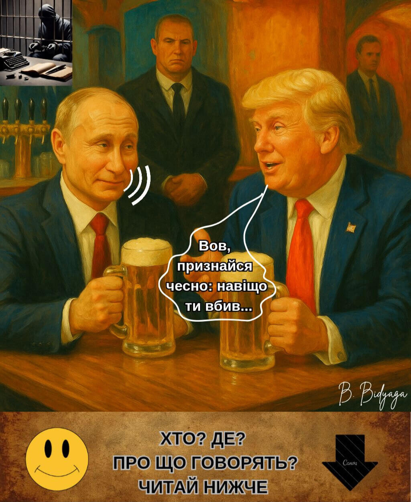
Американський бар. Президент Росії Володимир Путін та президент США Дональд Трамп сидять за столиком, п’ють пиво і мирно розмовляють.
Трамп:
— Вов, признайся чесно: навіщо ти вбив Навального? Невже він був для тебе справді небезпечний?
Путін:
— Донні, не розсмішуй мої капці! У цього типу рейтинг був на рiвнi плінтуса. Чого мені його боятися?
Трамп:
— Але тоді я не розумію...
Путін:
— Донні, ти повинен зрозуміти. Ця людина мене дратувала. Просто дуже бісила. Від самого його імені в мене підскакував тиск. Я не міг жити з ним в одній країні, я не міг дихати з ним одним повітрям. Я дав йому можливість поїхати. Він повернувся. Навіщо?
Трамп:
— І тоді ти наказав його вбити?
Путін:
— Донні, ну навіщо так брутально? Я всього лиш посадив його у в’язницю. За економічні злочини. Злодій мусить сидіти у в’язниці, Донні. Хіба ні?
Трамп:
— Чому ж він помер?
Путін:
— У нього було 15 хронічних хвороб, Донні. Зокрема герпес. З таким букетом довго не живуть.
Трамп:
— Так багато? Але ж він був ще зовсім молодий!
Путін:
— Так мені сказали хлопці, Донні. 20 хронічних хвороб. Зокрема простатит. Хлопці досвідчені, ще з часів Магнітського. Моя найкраща команда.
Трамп:
— Я чую про це вперше...
Путін:
— Та ми й самі не знали. А як вскриття зробили — ахнули: 25 хронічних болячок. Зокрема радикуліт. Як у якогось дряхлого діда.
Трамп:
— Неймовірно! З вигляду й не скажеш...
Путін:
— Мені не віриш — можу документи показати. Довідки, медкарта, протокол розтину... Документи не брешуть, Донні, все чисто: 30 хронічних хвороб. Зокрема холецистит. Він увесь був прогнилий наскрізь.
Трамп:
— Як же він у такому стані три роки протримався? Та ще й у в’язниці?
Путін:
— У нього було дев'ять життів, Донні. Як у кішки. Його навіть «Новачок» не брав. Дуже живучий був екземпляр. Це ж тільки подумати — 35 хронічних болячок! І воші у додаток! Це ж не людина, а ходячий труп!
Трамп:
— А чому тоді не віддаєш вдові особисті речі, документи, відеозаписи? Якщо все чисто?
Путін:
— Бачиш, Донні... Хлопці бояться, що речові докази знову потраплять у лапи Бундесверу. А ці німці, ти ж знаєш, з нічого докази видобувають. Як би знову конфузу не сталося — як того разу, з «Новачком».
Трамп:
— А чому ти весь час змінюєш версії? То в тебе аритмія — причина смерті, то тепер — отруєння?
Путін:
— Та це місцевий слідчий припустився помилки. Ямало-Ненецький. Написав чортзна-що. Між рядків читати не вміє.
(Пауза.)
Путін:
— Ось такі справи, Донні. Трагічна смерть від алергії на сильний мороз. І це чиста правда, Донні, можеш не сумніватися.
Трамп (убiк, насмішкувато):
— Скрижалі ФСБ? Заповідь №1: заперечуй очевидне.
(Пауза.)
Трамп (весело, звертаючись до Путіна):
— Гаразд, Вова, залишимо цю похмурну тему. Краще хильнемо пива.
Путін:
— За нас!
#ПравославнийВоєннийПутінізм
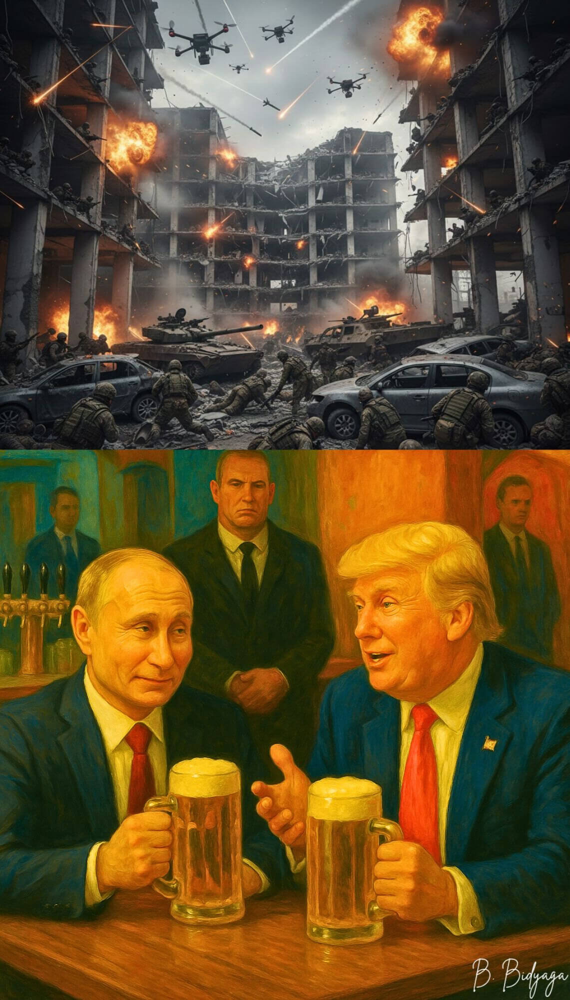
Американський бар. Президент Росії Володимир Путін та президент США Дональд Трамп сидять за столиком, п'ють пиво і мирно розмовляють.
Трамп:
— Вова, мене вже нудить від твоєї України. Як скалка в боці. Я майже шкодую, що в принципі вчепився до вашої сутички. Скінчення мого терміну близьке, і якщо до того часу я не дістану Нобелівку, мене проголосять найнікчемнішим та найогиднішим президентом за всю історію Штатів.
(Пауза.)
Трамп (умовляючи):
— Вова, ну чому ти не хочеш мені виручити? Адже я вклав у угоду всі пункти, про які ти просив. Мужик, давай вже підпишемо цей мирний договір! Для тебе це ж неймовірно вигідна угода! А головне — принесе заслужену славу мені!
Путін (байдужим тоном):
— Донні, мені теж треба вийти сухим з води. Мені потрібен Донбас, як ти не розумієш?! Адже я вже проголосив його в Конституції законною територією Росії. Та й до того ж: я мільйон життів поклав за цей клятий Донбас. Я мушу подати його своєму електорату на таці. Є Донбас — є перемога. Немає Донбасу — немає перемоги, а отже — усі жертви в тій кривавій м'ясорубці були марними.
Трамп (знижуючи голос):
— Вова, але ж ніхто не заважає тобі через пару років (та тільки після мого відходу!) продовжити цю війну. Інсценуй українську атаку на свою резиденцію. У Тверській області. У заповіднику. Тільки будь ласка — дотримуйся пристойності. Якщо ти висуваєш звинувачення — пред'яви докази. Справжні! «Рейхстаг» має горіти не вдавано. Запусти дрони з української території. Спали дотла свій улюблений палац, та ще й сто гектарів реліктового лісу на додачу. Покажи журналістам обгорілі тушки рідкісних тварин, занесених до Червоної книги. Коротше — пред'яви публіці якісний casus belli.
Путін (з сумнівом):
— Але ж ти даєш Україні гарантії безпеки. Якщо певні журналісти розкопають, що це чиста інсценівка, НАТО може задіяти проти мене п'яту статтю!
(Пауза.)
Путін (рішуче):
— Мені потрібні гарантії, Донні. Гарантії безкарності.
Трамп (згодно киваючи):
— Авжеж. І ти їх уже маєш, Вова. Найнадійніші гарантії — не ті, що скріплюються підписами на папері, найнадійніше — це неформальні домовленості між двома джентльменами.
Вова, згадай, що було після розпаду СРСР. Україна ж отримала тоді "залізобетонні гарантії", хіба ні? І що — хтось її захистив від твоєї агресії? Ніхто. То чого ж ти думаєш, що нові «гарантії» будуть «працювати» інакше? Я особисто за жодних обставин не втручатимусь у твою бійку з Україною. Особливо якщо ти достатньо переконливо «підпалиш свій Рейхстаг». Візьми Обаму, Байдена — вони як огню лякалися відкритого конфлікту з Росією. США ніколи не вступлять у війну, якщо вона безпосередньо не торкнеться їхніх інтересів.
Путін (недовірливо):
— А Європа?
Трамп (зневажливо):
— Європа?! Та годі тобі... Самі вони в пекло ніколи не полізуть. Тим паче, ти показав усьому світові безвідмовну тактику — завалювати ворога трупами своїх солдатів. Гори трупів. Від одного цього видовища Європа вже тремтить від страху. У Європі надто цінують людське життя. А що стосується постачання зброї, то в цьому вони будуть допомагати Україні лише допоки не відбудують власну оборону. А ти думав, вони озброюють Україну з доброти серця? Дідька лисого! Вони роблять це просто аби Україна відволікала на себе вогонь. Охороняла європейські рубіжі ціною власного життя.
Тому в тебе немає жодної причини для непокою. Давай проведемо кордон по поточній лінії фронту. Тимчасово. А ти поки відновишся та модернізуєш своє озброєння. У тебе ж власна економіка ледве дише! А через пару років повернешся зі свіжими силами.
Путін:
— А що я скажу народові?
Трамп:
— А що? Цілі спецоперації — денацифікація та демілітаризація — досягнуті. Донбас звільнений практично повністю. Не треба заморачуватися з цифрами. «Практично повністю» — це звучить як перемога.
Права російськомовного населення? Захищені. Яка поразка? Про що ти говориш? Беззаперечна перемога. Перший етап. Потім, після того як я дістану Нобелівку і скінчиться мій термін, — відіграєшся, і буде тобі перемога повна та остаточна. Та годі вже, Вова! Не вийобуйся! Підпишемо угоду, і по всьому!
#ПравославнийВоєннийПутінізм

Президент США Дональд Трамп дає інтерв’ю журналістам. Президент Росії Володимир Путін бере участь у конференції по відеозв’язку.
ТРАМП:
— Панове! Настав час діяти. Гренландія — це історично американська земля. Данці заселили її чорт знає ким. Інуїти? Та це ж перевдягнені єзуїти, заслані Ватиканом! Хитрі інтригани. Шкідники та диверсанти.
По-перше. Куди вони поділи ту зелену травичку, завдяки якій острів дістав свою назву? Вони її зжерли. І не лише її. Ви тільки подивіться: ще рік тому я вимірював цю територію на мапі — за Меркатором, Гренландія була вдвічі більшою! Вони відгризли від острова цілий шмат!
Ба більше, вони вистудили всю країну і вкрили її льодовиком — вони ж відколюють від нього шматки льоду і кидають до свого віскі! Це справжнє самопоїдання! Вони зжерли й усю свою оборонну міць — у гренландській армії залишилося два собачі запряги! Це злочин проти людства... тобто проти собацтва.
Як Великий захисник природи та тварин я не можу цього допустити. Я оголошую 2026 рік роком Великих Анексій. Зробимо Гренландію знову зеленою! MGGA!
Панове, Гренландія буде наша! Ми виходимо на найвищий щабель геополітичного піратства: MAGGGA!
MAKE AMERICA GREAT, GREENLAND GREEN — AGAIN !
Ми зробимо з Гренландії зелений газон для гольфу. А Америка купатиметься в доларах. Win-win.
Гренландці! Подумайте добре. Або ви йдете в мої обійми по любові, і тоді кожен з вас отримає червону кепку з логотипом MAGGGA, або я розтоплю весь ваш гренландський лід газовим пальником.
Так чи інакше — ви до мене припливете. Хоч на своїх миршавих шкаралупках, хоч на останній крижині.
Але коли ви прийдете просити в мене притулку, я запроторю вас усіх до розподільника — нехай кожен спочатку доведе, що не є іноземним агентом Данії чи Ватикану. І нехай складе присягу та прийме тавро з моїм портретом на ліву лопатку.
MAGGGA! Ура!
Хай завжди будуть Штати,
Хай завжди буде зе́лень,
Хай завжди буде сонце,
Хай завжди буде Трамп!
(Журналісти йдуть.)
ПУТІН (по відеозв’язку):
— Донні! Ну дай я тебе обійму! Ти мій найстаранніший учень. Засвоїв мої уроки на всі двісті. Твоє блискавичне захоплення венесуельської нафти — себто я мав на думці: диктатора Мадуро — це найвищий прояв стратегічного генія. Цей Мадуро — той ще фашист, чистіший за Зеленського. Нафта його зіпсувала. Нафта і влада — ось що псує людей. Ти добре вчинив, що скинув його з трону. І глянь-но, як миттю усе це шушвалля тебе зашанувало! Навіть ця нікчемна тітка Мачадо раптом захотіла віддати тобі свою Нобелівку.
Але які ж ці трухляві дідугани з Осло! Вирішили скасувати ринкову економіку. Дурниця несусвітня! Є попит, є пропозиція — є угода. Вторинний ринок завжди був, є і буде. Чорний ринок теж ніхто не скасовував. Отож, Донні, як купиш собі ту Нобелівку, дай-но знати — обкропимо твій новий титул.
А коли тобі оголосять імпічмент, переїжджай до Росії, за програмою «Громадянство в обмін на традиційну маячню»... тобто я хотів сказати: «традиційні цінності». І прихопи з собою Топ-10 секретів Пентагону.
Та ти не лякайся — я не підселю тебе до Януковича. Я зроблю тебе своїм Першим радником з питань України. Усі ці патрушеви, шойгу, герасимови, дугіни — бездарне злодійство. Все ніяк не наситяться: грошва, грошва, грошва. Ти не такий, Донні, ти — людина справи. Ти за грошвою не пориваєшся — у тебе її й так вистачає.
Разом ми скрутимо цю кляту Україну в баранячий ріг, Донні. Я здобуду свою славу, ти — рідкоземельні метали. Потім буде Молдова, Грузія, Вірменія та Казахстан. Без діла не залишимося. Це не про велич Америки чи Росії. Це про роль особистості в історії.
Уяви, що ти стоїш перед глобусом, як перед жирною та ароматною індичкою на День подяки. І в руках у тебе гострий клинок. Ми з тобою, як два злих генії, пишемо історію, Донні. Кров’ю. Як і належить великим Творцям.
#ПравославнийВоєннийПутінізм

Американський бар. Американський президент Дональд Трамп і президент Росії Володимир Путін сидять за столиком, п'ють пиво і мирно розмовляють.
Путін:
— Ну що, Донні, як просуваються справи з Гренландією?
Трамп (зі злістю):
— Повний глухий кут. Ти розумієш, Вова, вони не хочуть бути частиною Америки! Дріб'язкові, ні на що не годні люди. Америка — потужна держава. Ще й дякувати повинні! А вони впираються. Та хто вони такі, щоб заперечувати мені, найвеличнішому в світі Миротворцю? Люди — дурні, я давно це зрозумів. Я ж їм же добра хочу! А вони мені зі злості — уявляєш? — перегнали на острів «військовий контингент». Аж цілих двадцять один чоловік! Ой-ой-ой, як я тепер налякався!
Путін:
— Правий ти, Донні. Люди часто не розуміють, що для них добре, а що — погано. Потрібно їх, мов ту худобу, кийками в щасливий хлів заганяти. Тобто, хотів сказати: у щасливе майбутнє. Як діти малі, їй-богу.
Трамп:
— Саме так! Якщо я не приберу Гренландію до рук, то хто ж їх захистить від «російської та китайської загрози»? (Не ображайся, Вова, нічого особистого.) От мені кажуть: російських підводних човнів тут уже давно не бачили. Та й що? Сьогодні не бачили, а завтра їх буде десять, двадцять, сто!
Путін (задумливо):
— Та я й не ображаюся, Донні. Нічого особистого — чистий бізнес. Тобі потрібна Гренландія, мені — Донбас. У мене є підводні човни, ти маєш Зеленського в кишені. Та й весь цей довбаний Євросоюз у тебе, можна сказати, під каблуком. Ситуація складається якнайкраще для нас обох.
Трамп (зі захватом):
— Вова! Невже ти готовий заради мене піти проти всього НАТО й витратити мільйони на паливо для підводок?!
Путін (з поблажливою усмішкою):
— Це ж буде найкраща угода століття, друже. Чи вистачить тобі десятка моїх підводних човнів біля берегів Гренландії? Чи, може, забажаєш, щоб я висадив десант своїх «мирних купальників» на цих кам'янистих гренландських пляжах?
Трамп (проникливо):
— Послухай, Вова! Наш з тобою союз — це феномен історичного масштабу. Ми з тобою — справжні інь та ян. Ми не просто доповнюємо один одного — ми народжуємо нове якість. Коли ми разом — води застигають, а льоди розтають. Коли ми разом — вітер стає ураганом, а іскра розгорається в полум'я. Коли ми разом — увесь світ у трепеті й благоговінні схиляється перед нашою непереможною силою.
Путін (гучно сміється):
— Золоті твої слова, Донні! Такі промови треба запивати. Давай ще по одній!
#ПравославнийВоєннийПутінізм
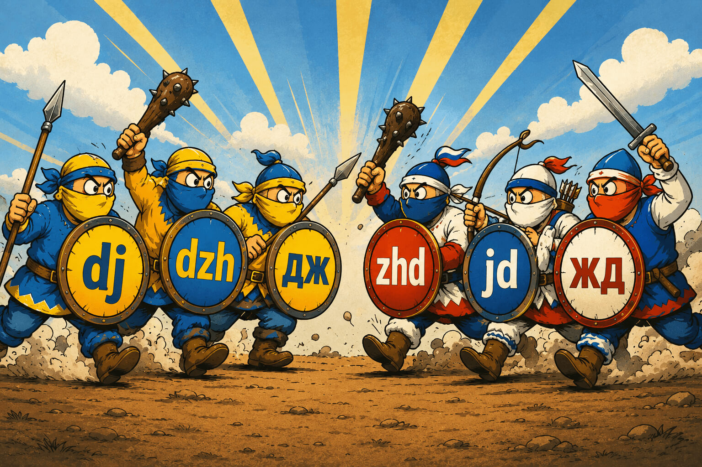
Росія, Москва, Кремль. Президент Росії Володимир Путін проводить нараду з керівниками силового блоку.
ПУТІН (червоний від люті):
— Безсоромність! Розвідка доповіла, що українське звукосполучення “дж” у десятки разів легше і простіше для артикуляції, ніж наше “жд”. От паскуди! Вкрали, переставили букви і насолоджуються, тоді як ми надриваємося, намагаючись вимовити це дурне “жд”.
Сами посудіть. Ану скажімо всі хором: “джек”! А тепер усі разом скажімо: “ждек”! Ну? Сами бачите, “джек” вимовляється легко і плавно, а об цей “ждек” язика зламаєш. З цим треба щось робити.
(Пауза.)
ПУТІН (суворо):
— Але найбільше мене дивує те, що я двадцять шість років при владі — а доповіли мені про це лише вчора. Як це розуміти? Як ми могли прогледіти цю диверсію?! Майте на увазі: я цієї справи так не залишу! Винні будуть суворо покарані.
(Пауза.)
ПУТІН (із надривом):
— Ну чому ця дурна Україна перевершує нас за всіма показниками? Чому в них чорнозем, а в нас вічна мерзлота? Чому в них клімат сприятливий, а в нас мерзенний? Чому в них дороги хороші, а в нас погані? Чому в них економіка зростає, а в нас стагнує? Навіть попри тотальну розруху та еміграцію? Чому в них Крим процвітав, а в нас перетворюється на пустелю? Чому в них ВВП на душу населення вищий, ніж у нас?
МИКОЛА ПАТРУШЕВ, помічник президента РФ (робко):
— Зате у нас ВВП на душу чиновника вищий, ніж у них…
ПУТІН (не удостоївши Патрушева відповіддю):
— Чому в них дрони кращі? Чому їхні солдати воюють самовіддано, а мої — за першої ж нагоди здаються в полон? Чому за повної відсутності флоту вони витіснили нас із Чорного моря? Чому в них зв'язок хороший, а в нас його взагалі немає? Чому в Зеленського рейтинг (справжній, не намальований) вищий, ніж у мене? Чому він виглядає, як справжній мачо, а я — как стара карга? А тепер ще й ці прокляті букви…
(Пауза: Путін намагається вирівняти дихання і витирає піт із чола.)
ПАТРУШЕВ (пошепки):
— Зате у них менше свят, і горілки на всіх не вистачає…
ПУТІН (гнівно зблиснувши очима):
— Не морочте мені голову! Розвалили країну! Розпустилися геть! Усіх посаджу!
(Повисає важка мовчанка. Учасники наради зосереджено розглядають власні нігті.)
ПУТІН:
— Значить так. Ця проклята Україна перейшла всі червоні лінії. Хохли не можуть бути кращими за росіян. Не мають морального права. За визначенням. Так чи інакше, але ми цього не допустимо. Наказую: знищити Україну в найкоротші терміни. Україну вигадав Ленін — от і покладіть її до його ніг. У цей бісів Мавзолей.
(Пауза: Путін напружено щось обмірковує.)
ПУТІН:
— Звукосполучення “дж” ми реквізуємо. Наказую: у всіх російських словах сполучення “жд” замінити на “дж”. Словники та книги переписати, всі застарілі видання спалити. Директора Інституту російської мови — посадити. Дякую за увагу!
#ПравославнийВоєннийПутінізм

Росія, Москва, Кремль. Президент Росії Володимир Путін виступає на закритій нараді за участю керівників силових відомств та адміністрації президента.
Путін:
— Товариші! Із прикрощами змушений повідомити, що заходи, які ми вживаємо для скорочення кількості абортів, не працюють. Від слова "зовсім". Ми можемо змусити медклініки відмовитися від ліцензій на аборти. Ми можемо зобов'язати жінку перед абортом проходити консультацію у психолога. Ми можемо вимагати від батька ембріона письмову згоду на аборт. Ми можемо нацькувати на жінок наших священиків з обіцянками пекла і вічних мук. Та хоч чорта з рогами! Марно. Руську бабу цими напівзаходами не візьмеш. Якщо наша жінка вирішила зробити аборт, вона його зробить. На крайній випадок знайде бабку-відьму із залізняччям та кухонним ножем. І без анестезії, в антисанітарних умовах позбудеться дитини. І, найімовірніше, сама підхопить інфекцію та помре від сепсису. Для нас це неприйнятно. Для нас це подвійна втрата.
Це глухий кут, товариші. І щоб із нього вибратися, нам потрібне принципово інше рішення. Нетривіальне. Парадоксальне. За гранню загальноприйнятих норм. Вибух мозку. Ось що я з цього приводу думаю.
Для того, щоб захистити наших солдатів — тобто я хотів сказати: ембріонів — ми повинні поширити на них дію нашого кримінального кодексу.
Нині всі кому не ліньки обговорюють тему прав людини. Але ніхто не задається питанням: а чому, власне, ембріони геть-чисто позбавлені всіх цих прав? Ну, припустимо, ембріону не потрібна свобода слова. Але право на життя — це базове право будь-якої людини і громадянина.
Чи можемо ми вважати ембріона людиною? На жаль, ні. Зате ми можемо зробити його громадянином Росії! Покажіть мені визначення громадянина! Хто сказав, що це обов'язково має бути людина, з руками і ногами?
Подивіться на наших героїв СВО! Багато хто повертається без рук, без ніг, здатність до самостійного мислення у них, слава богу, теж мінімізована — за них думає держава. Але хіба вони від цього перестають бути громадянами? Ні! Ембріон у цьому плані — ідеальний суб'єкт: у нього теж немає зайвих думок, він відданий вертикалі від самого початку!
Це прорив космічних масштабів, товариші! Це метафізичний місток у наше щасливе демографічне майбутнє. Нам із вами залишається всього лише внести поправки до закону про громадянство і прописати в конституції, що громадянином може бути не тільки людина (за народженням), а й ембріон (за зачаттям). І тоді щойно в матці зароджується ембріон, він негайно опиняється під захистом кримінального кодексу. Як і будь-який інший громадянин. Будь-яка неповага, заподіяння шкоди або, тим більше, вбивство ембріона караються так само суворо, як і злочини проти малолітніх дітей.
Зрозуміло, нам знадобиться ефективна система контролю та моніторингу. Наказую в найкоротші терміни розробити мікрочип, який ми вживлятимемо в кожну матку, що має репродуктивну функцію. Щоб правоохоронні органи мали можливість ефективно відстежувати зародження нових ембріонів та оперативно ставити їх на державний облік.
Щойно буде встановлено факт зачаття, ембріон негайно отримує російське громадянство. І паспорт з автентичним знімком, зробленим за допомогою апарату УЗД. Ембріону присвоюється ім'я "ЕМ-Путін" із порядковим номером. Наприклад: ЕМ-Путін-30964. Після народження дитини батьки зможуть дати їй інше ім'я. А можуть залишити ім'я "Путін". Чудове ім'я, я вважаю. Скорочена форма — просто краса: Путя.
І більше того — хочуть цього батьки чи ні — я автоматично стаю хрещеним батьком усіх ембріонів. Ви тільки подумайте — у мене буде ціла армія хрещених синів! Це велика відповідальність.
Микола Патрушев, помічник російського президента:
— Знаю я цих жінок. Напевно, будуть їздити народжувати в Америку. Щоб немовля отримало громадянство якоїсь Аргентини чи Бразилії. Спробуй призови такого на військову службу!
Путін:
— Пологовий туризм — це нецільове витрачання стратегічного демографічного ресурсу. На цей випадок у нас є особливий протокол: Не пущать! З моменту занесення ембріона до державного реєстру матка оголошується тимчасово невиїзним опікуном державного майна. Її закордонний паспорт зберігатиметься в районному відділі ФСБ до самого моменту народження.
Якщо ж, попри заборону, жінці вдасться виїхати з Росії, вона вноситься до списку іноагентів та екстремістів. А ми відправляємо запит до Інтерполу про екстрадицію збіглої матки за фактом нелегального викрадення громадянина РФ групою осіб за попередньою змовою. За демографічний саботаж російське майно пологових відмовників-космополітів буде конфісковано на користь держави.
Наказую негайно приступити до імплементації. І майте на увазі: цей стартап перебуватиме під моїм особистим контролем!
Дякую за увагу!
#ПравославнийВоєннийПутінізм

Росія, Москва. Зала засідань Держдуми РФ. Російський президент Володимир Путін виступає перед депутатами.
Путін:
— Шановні депутати! Друзі! Соратники!
Пів року тому ми з вами ухвалили закон про обов'язкову відповідність дитячих іграшок нашим традиційним цінностям. Це чудово! Духовно-моральні ідеали треба прищеплювати дітям з пелюшок. Але чому, скажіть на милість, ми поклали цей закон під скло? Чому він не застосовується на практиці? Чому наші діти граються в іграшки, які впроваджують у несформовану дитячу психіку чужі нам установки? Я б навіть сказав: ворожі.
Ось, наприклад, наша традиційна іграшка Матрьошка. Вам вона добре знайома. Усередині першої Матрьошки — Матрьошка менша, усередині другої — ще менша, і так далі. Абсолютно прозора алегорія репродукції. Сама по собі ідея прекрасна. Але імплементація нікуди не годиться. У такому вигляді Матрьошка стає нічим іншим, як символом деградації та виродження російської нації. Поясню. Якщо найбільшу Матрьошку ми позначимо як бабусю, то в кожному новому поколінні у неї виявляється лише одна демографічна одиниця, інакше кажучи — один нащадок: одна донька, одна внучка, одна правнучка і так далі. Яка ж це репродукція? Це не репродукція, це саморуйнування!
У кожної Матрьошки має бути як мінімум три доньки! Тоді у нашої "бабусі" буде дев'ять онучок і двадцять сім правнучок! Оце я розумію — репродукція! Оце я розумію — геометрична прогресія!
Ні, троє дітей — це, звісно, не межа. Але чисто технічно запхати в кожну Матрьошку чотирьох "доньок" було б складно. Тому пропоную почати з трьох. Наші дівчата повинні змалечку ввібрати ідею про те, що у кожної мами має бути як мінімум троє дітей. І давайте так прямо цю ляльку і назвемо — "Мама-Трьошка".
Другий приклад — також добре вам усім відома лялька Іванко-Встанько. Тут родзинка в тому, що її неможливо покласти — лялька самовільно приймає вертикальне положення. Прекрасна метафора... стійкості, і ми повинні її використовувати. Власний механізм вставання ми залишимо, а ось зовнішній вигляд ляльки треба змінити, зробивши її схожою на... хм... дітородний... хм... орган. Не натуралістично, без специфічних біологічних деталей. Ніякої пошлості, товариші. Це має бути чисто художня інтерпретація, але символізм повинен зчитуватися чітко: вічно ерегований... хм... стрижень, на якому тримається наша традиційна міцна сім'я.
Для нас тут подвійна користь. По-перше, наші дівчата повинні з народження звикати до дітородного... хм... органу. А то деякі з них виростають із нічим не виправданим почуттям гидливості: їм, бачите, соромно на нього дивитися і гидко до нього торкатися. Не дивно, що такі дівчата згодом стають під прапори ЛГБТ.
Ну а для хлопчиків це буде символом чоловічої сили та ідеалом, до якого потрібно прагнути.
І давайте дамо цій ляльці правильне ім'я, наприклад "Папа-Встанько". І треба продавати ці дві іграшки в комплекті, під брендом "Наші сімейні цінності". Щоб дитина з народження звикала до того, як у нашій сім'ї розподіляються демографічні функції.
І нарешті, іграшки, пов'язані з війною. Нарешті наші виробники почали випускати пістолети, які стріляють кулями. Пластиковими, звісно. Але це величезний крок уперед. Проте давайте подивимося на танки! Так, вони їздять, і ними можна керувати. Але ж танк — це не пасажирський транспорт! Танк повинен стріляти! Снарядами, нехай і пластиковими. І треба додати спецефекти: звук пострілу, дим із дула, запах гару. Майбутні воїни повинні змалечку звикати до труднощів фронтового життя.
Те саме з літаками. Вони у нас уже літають і керуються за допомогою радіосигналу. Але хлопчик із пелюшок повинен розуміти, що літаки вміють скидати бомби. Пластикові, звісно. Але теж із гуркотом, вогнем і димом.
А для пацанів старшого віку ми будемо виробляти справжні, функціональні моделі стрілецької зброї — пістолети, автомати Калашникова та інше. З надтвердого пластику або алюмінієвого сплаву. Щоб хлопчик навчився за хвилину розбирати й збирати зброю, знав, які частини треба чистити й змащувати. Щоб умів прицілюватися і вражати стаціонарні та рухомі об'єкти.
Зробимо додаток "Юний стрілець", прив'яжемо його до Держпослуг, і за кожне влучання, за кожен зданий норматив пацан отримуватиме бонуси та розряди. І коли ми призовемо його в армію, це буде вже не салага, а справжній боєць із досвідом. Залежно від розряду він одразу отримає звання сержанта або лейтенанта. Це найважливіша наша мета.
Зрозуміло, такі функціональні моделі обходитимуться недешево. Але ми внесемо їх до списку соціально значущих товарів, які, як ви знаєте, продаються населенню за безцінь. У крайньому разі заощадимо на охороні здоров'я. Або на ремонті доріг. Зрештою, по розбитих дорогах можна проїхати й на танку. А патріотичне виховання молоді — це запорука нашого майбутнього процвітання.
Дійте, товариші! Перемога буде за нами!
#ПравославнийВоєннийПутінізм

© Ольга Щеглова, 2025-2026